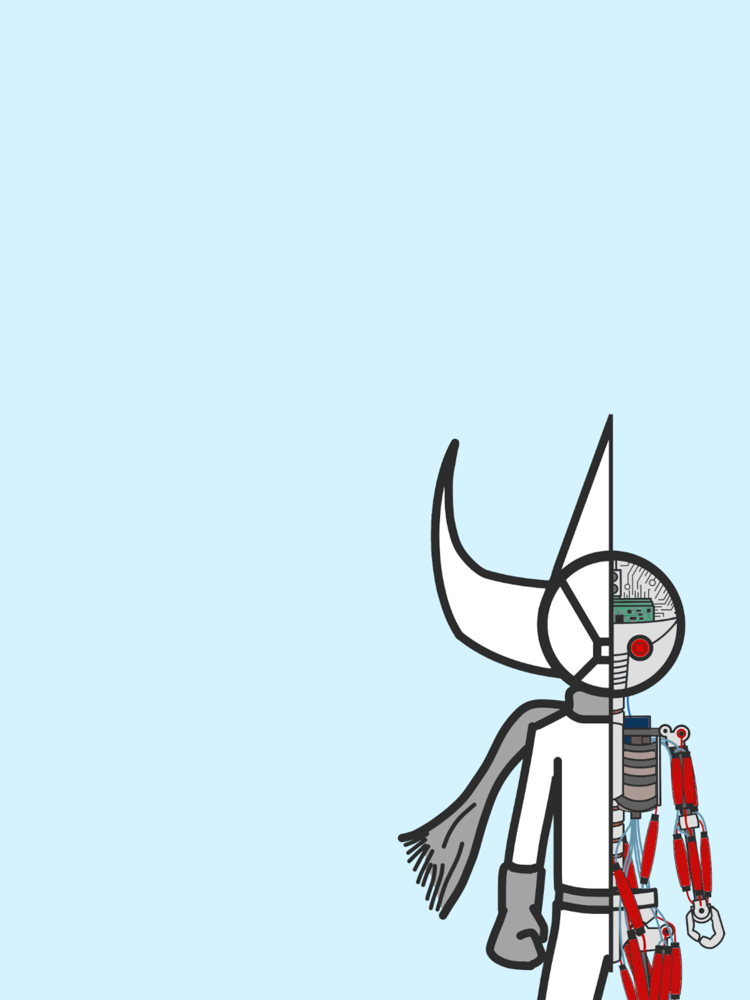
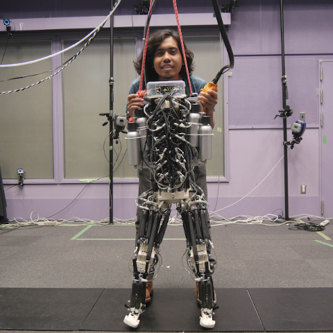
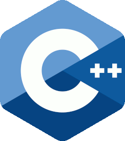
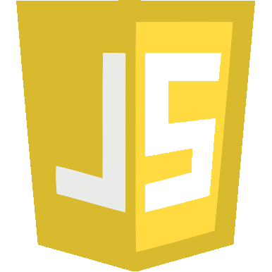

Human-Centered Robotics | Robot Motion Planning & Control | Intelligent Robotic Systems


I have wanted to build robots since I was a kid, humanoids most of all. I picture a future of human-robot coexistence where robots are as convenient and accessible as smartphones are today, and that goal drives my work in robotics.
I am a robotics engineer with a B.Sc. in Electrical Engineering from Institut Teknologi Bandung and an M.Sc. in Mechano-Informatics from The University of Tokyo. During my Master's research, I worked on a bio-inspired humanoid robot using pneumatic artificial muscles for agile, explosive locomotion. Since then, I have gained professional experience in industrial robotics, particularly robot motion planning and control for palletizing systems in logistics automation.
I want to keep deepening my research in robotics and intelligent systems, working toward a future where robots play an integral role in our daily lives.
I wrote further details about my projects and other learning notes on my blog.
See my blog

